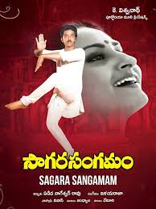

|  |
| Movie Name | Saagara Sangamam --1983 |
|---|---|
| Director | K Vishwanath |
| Cast | Kamal Haasan, Jaya Prada, Sarath Babu, S. P. Sailaja |
| Description | Balakrishna, a trained Kuchipudi dancer, gets an opportunity to compete in a classical dance festival. However, two days prior to his performance, his mother passes away which leaves him devastated |
| Duration | 02:48:00 hrs |
| back to home |